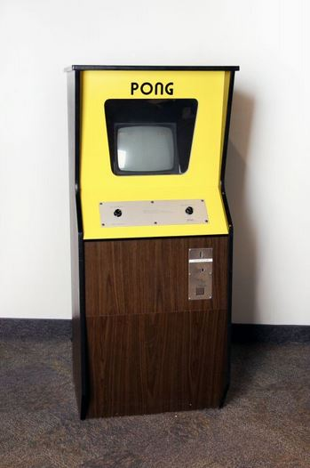
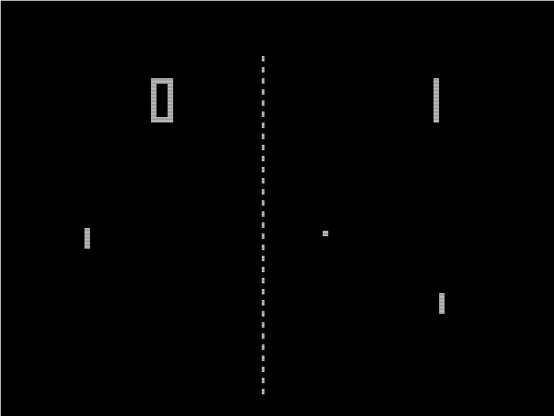
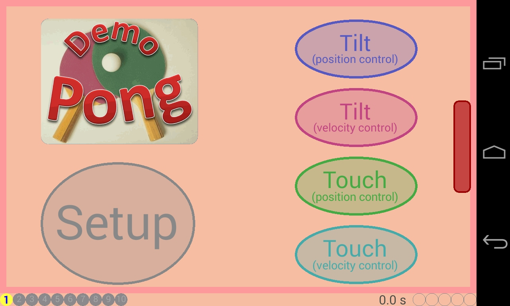
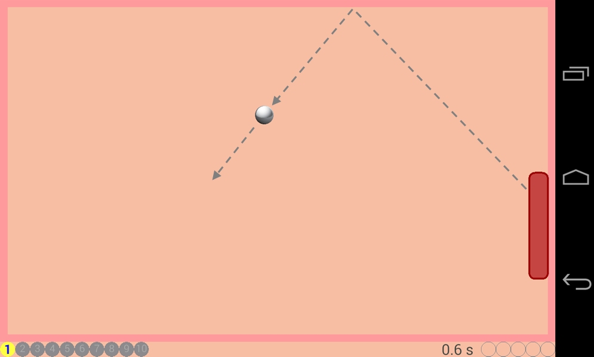
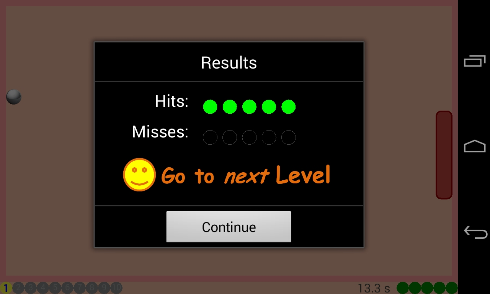
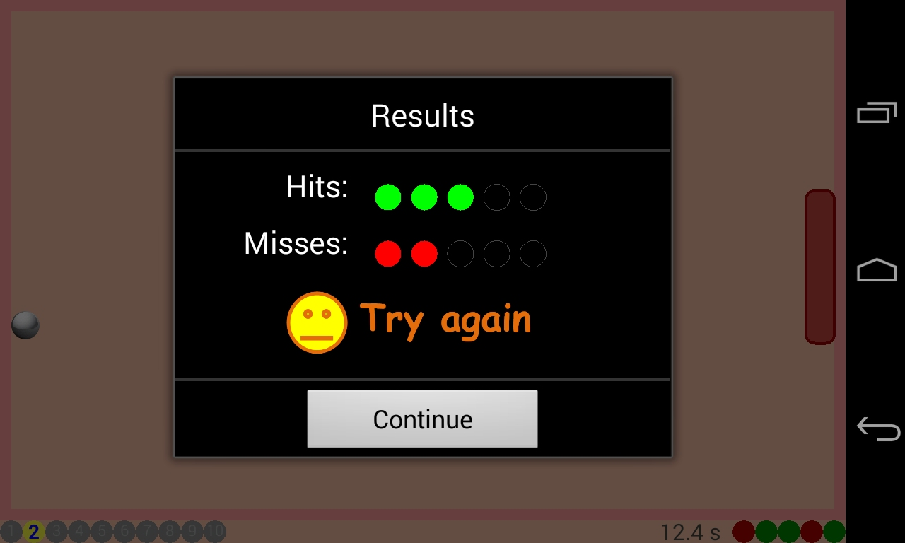
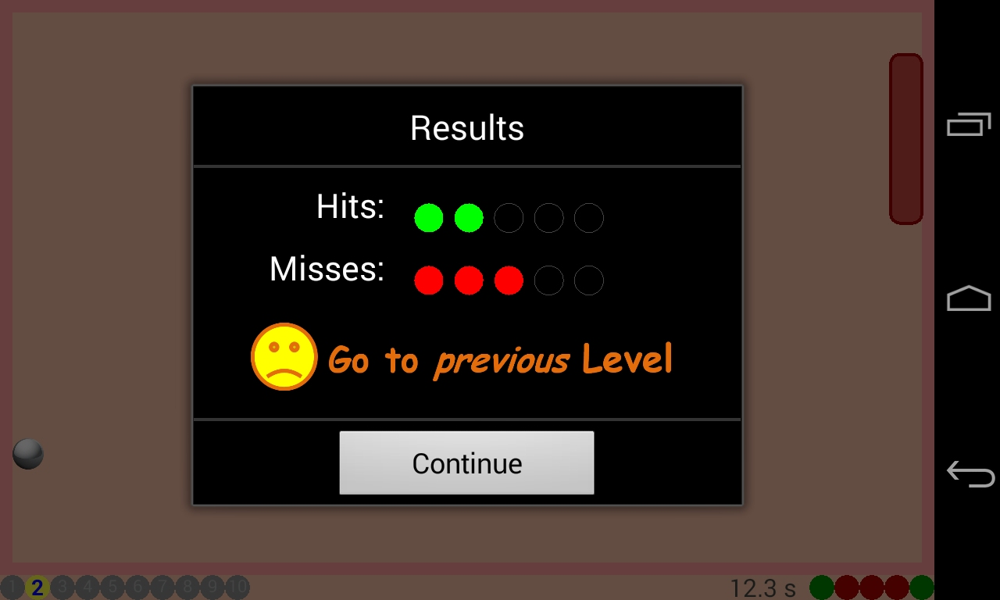
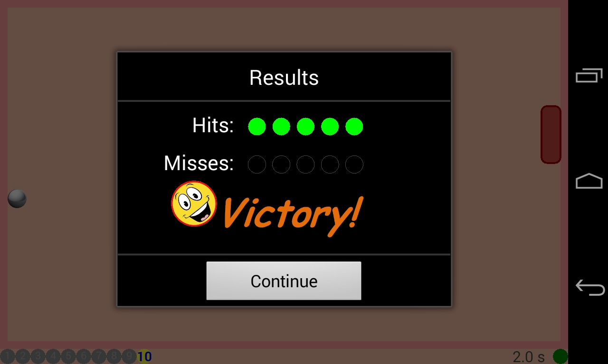
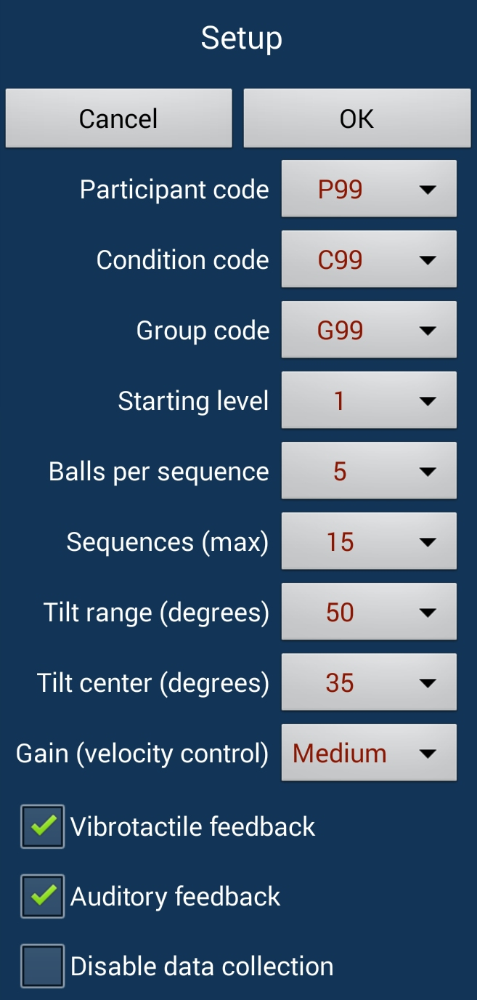
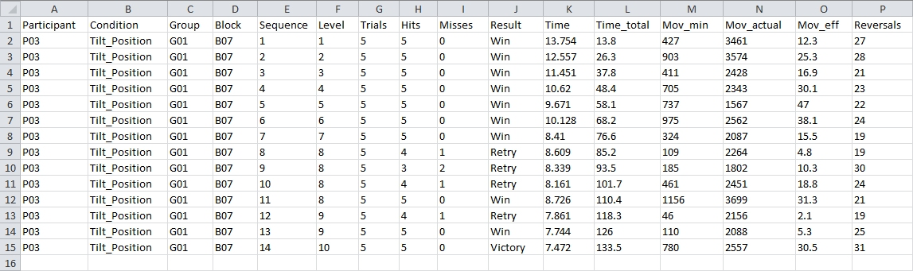

- java.lang.Object
-
- Activity
-
- ca.yorku.eecs.mack.demopong.DemoPongActivity
-
- All Implemented Interfaces:
- OvalButton.OnOvalButtonClickListener, PongView.OnBlockDoneListener, ResultsDialog.OnResultsDialogClickListener, ThankYouDialog.OnThankYouDialogClickListener
public class DemoPongActivity extends Activity implements ResultsDialog.OnResultsDialogClickListener, OvalButton.OnOvalButtonClickListener, PongView.OnBlockDoneListener, ThankYouDialog.OnThankYouDialogClickListener
Demo_Pong
Summary
- Demonstration of a simple Pong-like game (including a setup dialog, data collection, etc.)
Related Reference
The following publication presents research where a variation of this software was used.-
Comparing
order of control for tilt and touch games, by Teather and MacKenzie (IE 2014).
Background
Pong was an arcade video game developed by Atari in 1972. The game-play simulates table tennis where the player manipulates a paddle to bounce back an approaching ping-pong ball:  Additional historical details are found on Wikipedia (click here).UI Summary
When Demo_Pong is launched, the following UI appears: (click to enlarge) The app runs in fullscreen, landscape mode. Game-play begins by tapping one of the Tilt or Touch oval buttons. With this, the buttons disappear and a pong ball appears and moves diagonally on the table, bouncing off the walls: (dashed lines added) The initial ball velocity is 4 inches per second on a Nexus 4. The game geometry and ball velocity are scaled according to the display size so that the game difficulty and experience are approximately the same on any device. The game paddle is positioned along the right side of the display (see above). If the control mode is touch, a touch strip appears along the left side of the display:
Button Control Mode Order of Control Description 
Tilt Position The tilt angle of the device controls the position of the paddle. If the device is held horizontally, tilted 35° toward the player, the paddle is vertically centered. Tilting back by 25° positions the paddle at the top of the table. Tilting forward by 25° positions the paddle at the bottom of the table. Within this tilt range, there is a direct correspondence between tilt angle and paddle position. Both the center angle and tilt range may be changed through the app's settings (discussed below). 
Tilt Velocity The tilt angle of the device controls the velocity of the paddle. The center angle and tilt range are the same as above. With velocity-control, however, it is the velocity of the paddle that is controlled. At the center angle, the paddle velocity is 0. The velocity increases gradually (paddle movement is up) as the paddle is tilted back from the center angle. The velocity increases gradually and negatively (paddle movement is down) as the paddle is tilted forward from the center angle. 
Touch Position The position of the finger on the touch strip controls the position of the paddle. The user positions their left thumb on the touch strip and controls the paddle position by moving their thumb up and down on the strip. There is a direct correspondence between the touch position and the paddle position. 
Touch Velocity The position of the finger on the touch strip controls the velocity of the paddle. The user positions their left thumb on the touch strip and controls the paddle velocity by moving their thumb up and down on the strip. There is a direct correspondence between the touch position and the paddle velocity, which is +ve when touching above the center line and -ve when touching below the center line. Game Progression
The game includes 10 levels: level 1 is the easiest, level 10 is the hardest. Game-play begins at level 1 and proceeds in sequences of trials. Each back-and-forth cycle of the ball is a trial, ending in a hit or miss. By default, 5 trials are grouped in a sequence. At the end of a sequence, the player's performance is assessed as follows:- 0 misses – proceed to the next level
- 1-2 misses – repeat level
- 3-5 misses – go back one level
The following popups illustrate:
   The game difficulty increases in three ways as the levels progress:- The ball velocity increases. The increase is linear by level. At level 10, the ball velocity is 150% of the initial velocity.
- The paddle size (height) decreases. The decrease is linear by level. At level 10, the paddle size 50% of the initial paddle size.
- A random offset is applied to the bounce angle at the wall opposite the paddle. The offset
increases linearly from 0.1 x at level 1 to x at level 10, where x = 45°
×
nextRandom(). The offset is applied relative to minimum and maximum bounce angles of -45° and +45°, respectively.
 The happy face above is animated. It rotates and bounces around within the popup. Auditory feedback ("Tada!") accompanies victory.Experimental Use
Demo_Pong is not just a demo program and game. It is intended for experimental use to assess and compare user performance with the four control modes (see above). As such, there is a setup dialog to select codes for participants, operating parameters, etc. The setup dialog is shown below: For each launch of the program, game-play proceeds over the number of sequences specified in the setup dialog. This is a maximum, however. If the player reaches level 10 and completes it with no misses ("Victory"), the game ends. Either way, data are saved in a file and the program terminates. The following is an example of a data file collected as part of experimental testing: DemoPong-P03-Tilt_Position-G01-B07.csv. After opening in Excel and adjusting the column widths and cell alignments, the data might look like this: (click to enlarge) The first four columns (A-D) identify the circumstances of the test, including codes for the participant, the condition, the group, and the block. The condition code in the example is "Tilt_Position", but this can be any code that identifies circumstances of the testing. The group code typically identifies the group to which the participant was assigned in a within-subjects design (i.e., for counterbalancing). The block code is generated automatically, to facilitate testing and to ensure the file name is unique. The next three columns (E-G) identify characteristics of the game-play: the sequence number, the level, and the number of trials in the sequence. The next nine columns (H-P) are performance measures. The performance measures in columns H through L are obvious enough. The measures in columns M, N, O, and P merit explanation, however. Mov_min is the minimum possible movement of the paddle to hit all balls, while Mov_actual is the actual amount of movement. The units are pixels. Mov_eff is the movement efficiency, which is Mov_min / Mov_actual, expressed as a percent. The maximum is 100%, assuming 0 misses. This represents the most efficient paddle movement possible. As seen above, the participant's movement of the paddle was far from ideal. Reversals is the number of times the paddle direction changed. It might be expected that with experience Mov_eff would increase and Reversals would decrease. However, this can only be established through prolonged experimental testing. Finally, note that the measures in these columns are for the number of trials specified in column G.Code Summary
Demo_Pong brings together many Android coding principles from our earlier demo programs. For drawing in a secondary thread, see Demo_SurfaceView. For the use of tilt as an input control, see Demo_TiltBall. For data collection, storage, and experimental testing, see Graffiti.
{kind=link}
{kind=link}
{kind=link}
{kind=link}
{kind=link}
{kind=link}
{kind=link}
{kind=link}
{kind=link}
{kind=link}
-
-
Constructor Summary
Constructors Constructor and Description DemoPongActivity()
-
Method Summary
All Methods Instance Methods Concrete Methods Modifier and Type Method and Description voiddoFileInitialization()intgetDefaultDeviceOrientation()floatgetRatio(float value, float min, float max)voidloadSettings()Executed from onCreate and from onActivityResult.protected float[]lowPass(float[] input, float[] output, float alpha)voidonAccuracyChanged(Sensor sensor, int accuracy)protected voidonActivityResult(int requestCode, int resultCode, Intent data)voidonBackPressed()voidonBlockDone()protected voidonCreate(Bundle savedInstanceState)voidonOvalButtonClick(OvalButton ovalButton)protected voidonPause()voidonResultsDialogClick(int buttonId)protected voidonResume()voidonSensorChanged(SensorEvent se)voidonThankYouDialogClick()booleanonTouch(View v, MotionEvent me)voidonWindowFocusChanged(boolean hasFocus)
-
-
-
Method Detail
-
onCreate
protected void onCreate(Bundle savedInstanceState)
-
loadSettings
public void loadSettings()
Executed from onCreate and from onActivityResult.
-
onWindowFocusChanged
public void onWindowFocusChanged(boolean hasFocus)
-
onOvalButtonClick
public void onOvalButtonClick(OvalButton ovalButton)
- Specified by:
onOvalButtonClickin interfaceOvalButton.OnOvalButtonClickListener
-
doFileInitialization
public void doFileInitialization()
-
onActivityResult
protected void onActivityResult(int requestCode, int resultCode, Intent data)
-
onBackPressed
public void onBackPressed()
-
onTouch
public boolean onTouch(View v, MotionEvent me)
-
onSensorChanged
public void onSensorChanged(SensorEvent se)
-
onAccuracyChanged
public void onAccuracyChanged(Sensor sensor, int accuracy)
-
getRatio
public float getRatio(float value, float min, float max)
-
getDefaultDeviceOrientation
public int getDefaultDeviceOrientation()
-
onPause
protected void onPause()
-
onResume
protected void onResume()
-
lowPass
protected float[] lowPass(float[] input, float[] output, float alpha)
-
onResultsDialogClick
public void onResultsDialogClick(int buttonId)
- Specified by:
onResultsDialogClickin interfaceResultsDialog.OnResultsDialogClickListener
-
onThankYouDialogClick
public void onThankYouDialogClick()
- Specified by:
onThankYouDialogClickin interfaceThankYouDialog.OnThankYouDialogClickListener
-
onBlockDone
public void onBlockDone()
- Specified by:
onBlockDonein interfacePongView.OnBlockDoneListener
-
-